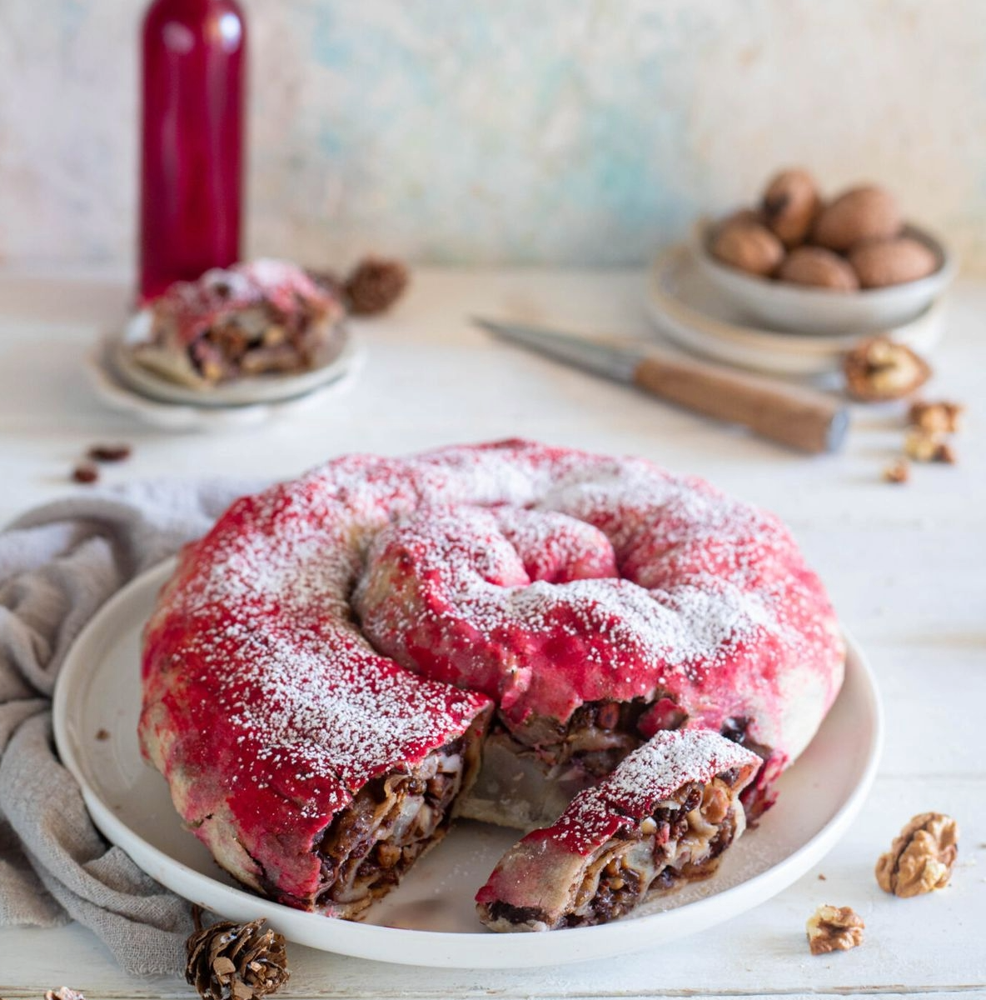
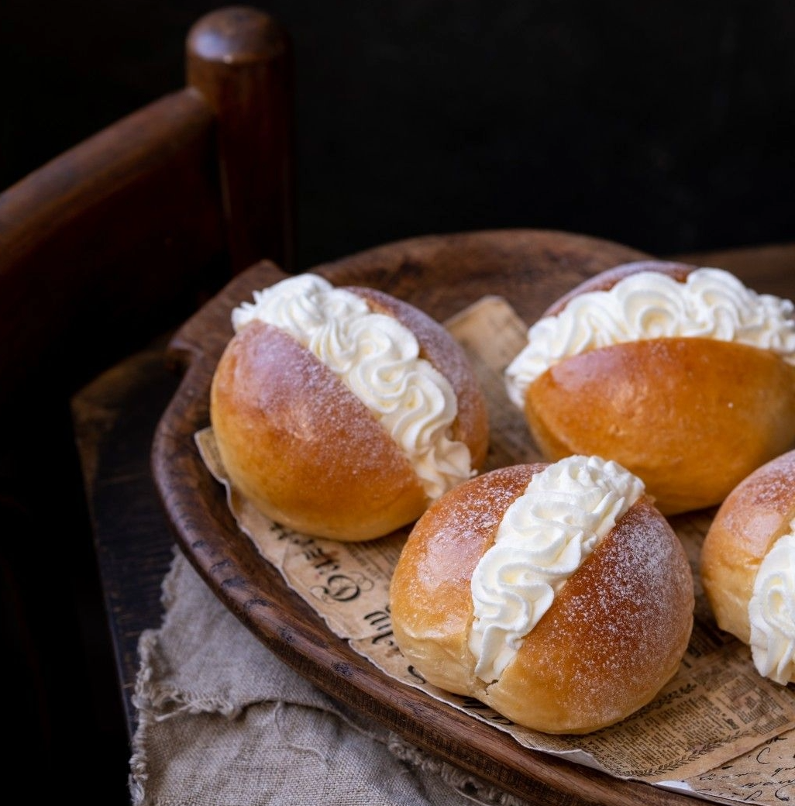

Ricette Dolci
In questa sezione troverai tutte le ricette dolci tipiche delle regioni italiane, adatte ad ogni occasione.

Umbria -La Rocciata-
Ingredienti:
-Farina 00 250 g
-Olio extravergine d'oliva 50 g
-Acqua 110 g
-Sale fino q.b.
Per il ripieno:
-Mele Golden 400 g
-Zucchero 60 g
-Uvetta 60 g
-Pinoli 80 g
-Gherigli di noci 50 g
-Cacao amaro in polvere 15 g
-Cannella in polvere 10 g
-Rum 90 g
-Scorza di limone 1
Per guarnire:
-Alchermes q.b.
-Zucchero a velo q.b.
Preparazione:
Per preparare la rocciata umbra cominciate dall'impasto della sfoglia. Sul piano da lavoro versate la farina, formate una fontana e aggiungete l'olio, il sale e l'acqua un po' alla volta mentre mescolate con una forchetta.
Versatela un po' alla volta per evitare di formare grumi. Dopodiché potrete passare a impastare a mano finché non avrete ottenuto una palla liscia. Avvolgete nella pellicola e fate riposare in frigorifero per almeno un'ora.
Intanto occupatevi del ripieno. Versate 60 grammi di rum sull'uvetta e lasciate in ammollo. Poi pelate le mele, tagliatele in 4 parti per eliminare il torsolo e infine ottenete dei cubetti.
Grattugiate la scorza di limone, unite lo zucchero, la cannella, il cacao in polvere, i gherigli di noci spezzettati a mano, i pinoli e l'uvetta scolata i restanti 30 grammi di rum e ora mescolate per uniformare completamente gli ingredienti. Ora che è pronto recuperate l'impasto e tiratelo con il matterello, sul piano leggermente infarinato, fino ad ottenere una sfoglia molto sottile.
Distribuite il ripieno su tutta la superficie lasciando un paio di centrimetri dai bordi, quindi arrotolate per ottenere un cilindro e successivamente arrotolate di nuovo ottenendo così una spirale.
Trasferite la girella su una placca foderata con carta forno e procedete con la cottura in forno, statico già caldo a 180°, per circa 30 minuti. Una volta cotta spennellatela da calda con un po' di Alchermes e con dello zucchero a velo. Ecco pronta la vostra rocciata umbra!

Lazio -I Maritozzi-
Ingredienti:
-Farina Manitoba 500 g
-Acqua tiepida 250 ml
-Uova medie 2
-Lievito di birra secco 4 g
-Olio di semi di mais 85 g
-Sale 6 g
-Zucchero 95 g
-Malto 1 cucchiaino
-Uva passa 30 g
-Pinoli 30 g
-Arancia candita 30 g
-Scorza di limone 1
Per glassare:
-Zucchero 150 g
-Acqua 100 g
Per farcire:
-Panna fresca liquida 500 ml
-Zucchero a velo 40 g
Preparazione:
Per preparare i maritozzi, sciogliete il lievito disidratato (oppure 12 gr di lievito di birra fresco) in poca acqua tiepida, aggiungete un cucchiaino di malto e mescolate bene. Ponete la farina manitoba in una ciotola, insieme allo zucchero, formando un buco al centro in cui verserete il lievito e il malto sciolti insieme, che stempererete un po' con la farina.
Nella restante acqua tiepida versate il sale, l’olio di semi e la scorza grattugiata di limone e mescolate.
Versate il liquido ottenuto a filo sulla farina e impastate con le mani, facendo gesti ampi e veloci. Intanto separate i tuorli dagli albumi, che terrete da parte, e aggiungete solo i tuorli e all’impasto. Continuate ad impastare, almeno per 6-7 minuti, fino a che il composto non risulterà ben compatto.
Intanto mettete ad ammollare l’uvetta in acqua fredda per 10 minuti, strizzatela o lasciatela sgocciolare in un colino e asciugatela con un panno. Aggiungete l'uvetta, i pinoli e l'arancia candita (oppure la scorza grattugiata di 1 arancia) all’impasto e continuate ad impastare affinchè i pinoli, l’uvetta e l'arancia vengano assorbiti dall’impasto. Ponete l’impasto dei maritozzi in una ciotola infarinata, coperta dalla pellicola e lasciate lievitare per almeno 2 ore in forno chiuso e spento (potete lasciare la sola luce accesa per accelerare la lievitazione).
Quando l’impasto dei maritozzi avrà raddoppiato di volume, trasferitelo su di un piano di lavoro infarinato e dividetelo 12 pezzi del peso di circa 85-90 gr l’uno.
Date ad ogni pezzo una forma rotonda ben chiusa sotto, sistemateli su di una leccarda da forno foderata con un foglio di carta da forno e copriteli con della pellicola, lasciandoli lievitare per mezz’ora. Trascorso questo tempo date loro una forma un po’ allungata e spennellateli con gli albumi che avrete tenuto da parte. Copriteli ancora con la pellicola e fateli lievitare per l’ultima volta ancora un’ora. Intanto che i maritozzi lievitano, preparate lo sciroppo di zucchero, che servirà per spennelare, mettendo in un pentolino lo zucchero e l’acqua. Fate sciogliere bene lo zucchero fino a che il liquido non diventi trasparente e fatelo raffreddare. Ora che i maritozzi avranno finito di lievitare infornateli in forno caldo a 180 gradi per 18 minuti.
Montate anche la panna a neve ferma in una planetaria insieme allo zucchero a velo. Quando i vostri maritozzi si saranno ben dorati sulla superficie, sfornateli e ancora caldi spennellateli con lo sciroppo di zucchero.
Una volta raffreddati, fate un taglio al centro di ogni maritozzo e farcite ognuno con ciuffi di panna montata che avrete trasferito in una sac-à-poche. Ecco pronti per essere serviti i vostri maritozzi!